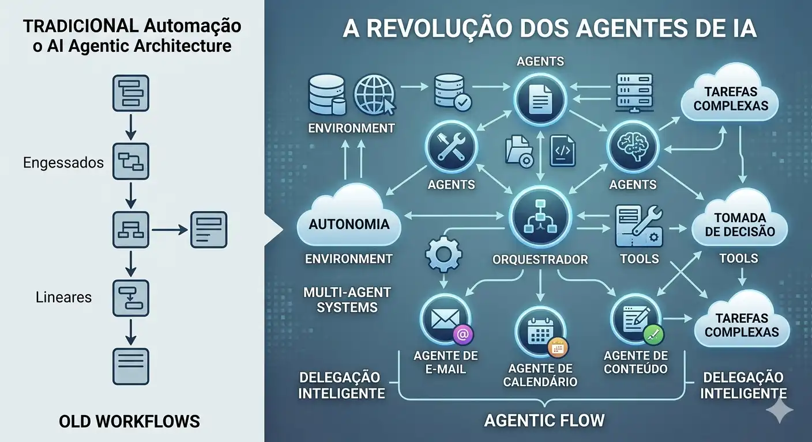

A Revolução dos Agentes de IA e a Arquitetura Agêntica do Claude
Os agentes de Inteligência Artificial estão redefinindo o cenário do desenvolvimento de software e das automações corporativas. Diferente dos antigos fluxos de trabalho engessados, a era da codificação e dos fluxos agênticos permite que sistemas operem com autonomia, raciocínio e capacidade de decisão.

As vantagens de usar agentes de IA
A principal vantagem dos agentes de IA é a capacidade de realizar tarefas extremamente complexas de forma 100% autônoma. Quando você envia uma solicitação para um sistema agêntico, ele não apenas cospe uma resposta estática; ele consegue interagir com o ambiente, usar ferramentas, visualizar arquivos e executar comandos.
Entre os principais benefícios do uso de agentes, destacam-se:
- Sistemas multiagentes e delegação — os agentes permitem a criação de arquiteturas hierárquicas onde um agente principal atua como um "delegador inteligente". Esse agente orquestrador analisa o pedido do usuário e o divide, enviando tarefas específicas para subagentes especialistas (como um agente focado apenas em e-mails, outro em calendário e outro na criação de conteúdo).
- Confiabilidade e redução de alucinações — diferente de um simples chatbot, um agente possui memória para reter o contexto das interações e acesso a ferramentas reais (como pesquisar na internet ou ler um banco de dados), o que minimiza muito o risco de alucinações e respostas inventadas.
- Democratização da criação (no-code) — fluxos agênticos permitem que pessoas comuns, sem nenhum conhecimento em programação, consigam transformar uma ideia em realidade. É possível construir desde o Mínimo Produto Viável (MVP) até sistemas completos (full-stack) utilizando apenas prompts em linguagem natural.
Como o Claude Code utiliza os agentes em sua arquitetura
O Claude Code, alimentado pelos modelos da Anthropic (como Claude Opus e Claude Sonnet), foi desenhado em sua essência para ser uma ferramenta de codificação agêntica voltada ao desenvolvimento de soluções. Ele incorpora o conceito de agentes na sua arquitetura das seguintes maneiras:
- Autonomia baseada em terminal (CLI) — a arquitetura do Claude Code possui uma base de terminal, o que significa que ele foi criado para operar diretamente do computador do usuário. Ele consegue ler todo o código-fonte, editar arquivos, executar comandos no terminal e se integrar nativamente às ferramentas de desenvolvimento de forma autônoma.
- Controle e paralelismo — para aproveitar essa autonomia sem perder a segurança, a arquitetura do Claude permite que ele atue como uma extensão dentro de uma IDE (como o Google Antigravity). Durante a resolução de um problema, a arquitetura agêntica do Claude permite que ele separe a tarefa recebida e crie subagentes para trabalhar em paralelo, agilizando o cumprimento do objetivo.
- Cadeia de pensamento (reasoning) e etapas — o verdadeiro diferencial arquitetônico dos modelos focados no Claude (especificamente o modelo Opus) é a sua estrutura de raciocínio. Ele foi propositalmente criado para que, ao receber um pedido, ele sempre separe essa tarefa em várias etapas diferentes antes de agir. Essa cadeia de pensamento o torna excepcionalmente bom e voltado para tarefas complexas que precisam ser estruturadas metodicamente.
Em resumo, a vantagem de se adotar a lógica agêntica presente em ferramentas como o Claude é a transição de um modelo em que o humano faz o trabalho pesado de lógica e programação para um ecossistema autônomo onde a IA planeja, pesquisa, divide tarefas, corrige seus próprios erros e executa o código final.